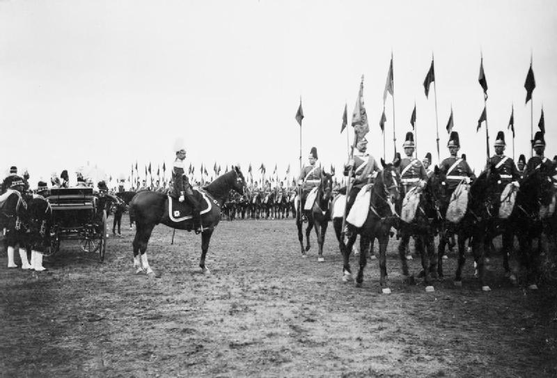
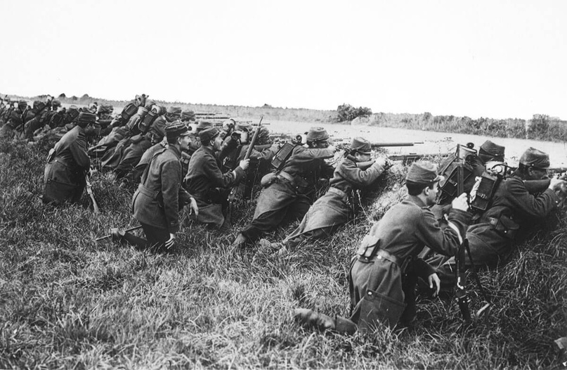

Почему План Шлиффена провалился?
Автор статьи: Максим Вахминцев
Опубликовано: 6 июля 2022
Опубликовано: 6 июля 2022
Статья в группе ВК Историческая империя: https://clck.ru/3M6TZ4
В 1870-1871 гг. прусские войска разгромили Францию, что позволило восстановить единую Германскую империю. Разгромив сильнейшую армию Западной Европы, Германия подтвердила свой статус непобедимой военной машины. Вместе с тем Хельмут фон Мольтке, начальник германского Генерального штаба, предсказывал повторение большой войны с Францией:
«Через 50 лет Германии придется отстаивать завоевания 1870 года».
Противостояние Германии и Франции становилось особенно принципиальным из-за присоединения к Германии Эльзаса и Лотарингии по условиям Франкфуртского мира. Справедливости ради стоит отметить, что данные регионы долгое время входили в состав Священной Римской империи и были аннексированы Францией лишь в 17-18 веках.
С другой стороны, к 1871 г. в Эльзасе и Лотарингии уже чувствовалось доминирование французского языка и французской культуры, что усложняло немцам задачу управления ими. Для Франции потеря этих провинций была символом национальной катастрофы и унижения, за которые она стремилась расплатиться сполна.
В 1870-1871 гг. прусские войска разгромили Францию, что позволило восстановить единую Германскую империю. Разгромив сильнейшую армию Западной Европы, Германия подтвердила свой статус непобедимой военной машины. Вместе с тем Хельмут фон Мольтке, начальник германского Генерального штаба, предсказывал повторение большой войны с Францией:
«Через 50 лет Германии придется отстаивать завоевания 1870 года».
Противостояние Германии и Франции становилось особенно принципиальным из-за присоединения к Германии Эльзаса и Лотарингии по условиям Франкфуртского мира. Справедливости ради стоит отметить, что данные регионы долгое время входили в состав Священной Римской империи и были аннексированы Францией лишь в 17-18 веках.
С другой стороны, к 1871 г. в Эльзасе и Лотарингии уже чувствовалось доминирование французского языка и французской культуры, что усложняло немцам задачу управления ими. Для Франции потеря этих провинций была символом национальной катастрофы и унижения, за которые она стремилась расплатиться сполна.

Французская пехота в 1914 году.
В Германии в полной мере сознавали степень радикализации и милитаризации французского общества, а также внимательно следили за военными реформами Франции. Французы учредили Высший военный совет и произвели деление страны на военные округа, каждый из которых выставлял по одному корпусу.
С другой стороны, французское командование неохотно осваивало достижения современных военных технологий. Немцы же активно осваивали новейшую военную технику и сохраняли наступательный дух, руководствуясь принципом: «Лучшая оборона – это нападение!».
Почему же немцы готовились вести превентивную оборону? Находясь в самом центре Европы, Германия не могла и не хотела вести оборону на собственной территории. В Берлине не могли допустить начала наступления французской армии и утрату земель Южной и Западной Германии, как это уже произошло в начале XIX века.
На территории империи находилось множество промышленных предприятий, и потеря даже части из них могла стать болезненным ударом для всей германской экономики. Это стало бы особенно фатальным в случае, если на стороне Франции выступили бы одновременно Британия и Россия. Одним словом, чтобы избежать войны на два фронта, Германии нужно было сначала как можно быстрее нанести поражение Франции, а затем перебросить войска по железным дорогам против России.

С другой стороны, французское командование неохотно осваивало достижения современных военных технологий. Немцы же активно осваивали новейшую военную технику и сохраняли наступательный дух, руководствуясь принципом: «Лучшая оборона – это нападение!».
Почему же немцы готовились вести превентивную оборону? Находясь в самом центре Европы, Германия не могла и не хотела вести оборону на собственной территории. В Берлине не могли допустить начала наступления французской армии и утрату земель Южной и Западной Германии, как это уже произошло в начале XIX века.
На территории империи находилось множество промышленных предприятий, и потеря даже части из них могла стать болезненным ударом для всей германской экономики. Это стало бы особенно фатальным в случае, если на стороне Франции выступили бы одновременно Британия и Россия. Одним словом, чтобы избежать войны на два фронта, Германии нужно было сначала как можно быстрее нанести поражение Франции, а затем перебросить войска по железным дорогам против России.
{kind=link}
Кайзер Вильгельм принимает парад кавалерии на маневрах имперской армии в Позене, 1902.
План по разгрому Франции был разработан и утвержден начальником Германского Генерального штаба генерал-фельдмаршалом Альфредом фон Шлиффеном. Он тщательно изучил опыт римско-карфагенских войн и, в особенности, сражения при Каннах, когда римские войска оказались окружены и уничтожены армией Ганнибала.
Шлиффен намеревался повторить Канны, но в больших масштабах – предполагалось, что германские войска ударом через Бельгию выйдут к Парижу и атакуют с тыла французские армии, сосредоточенные по Плану № 17 возле Эльзаса и Лотарингии. Последние намеревались встречными ударами в районе Меца разделить и окружить германские войска, стоявшие в провинциях – после этого французы получили бы возможность продолжить наступление в направлении Пфальца, Бадена и Вюртемберга.
Согласно изначальному варианту Плана Шлиффена, самый длинный маршрут наступления был у войск 1-й армии генерала Клюка (320 тыс. человек) – ей предстояло выйти в тыл главных сил французов через Брюссель, Лилль, Руан, Шатре и Осер. 2-я армия Бюлова (260 тыс. человек) двигалась по несколько укороченной дуге Льеж-Шарлеруа-Перенн, выходя к Парижу и реке Марне. 3-й армии Хаусена (180 тыс. солдат) предстояло наступать через Ла-Рошель к Суасону.

Шлиффен намеревался повторить Канны, но в больших масштабах – предполагалось, что германские войска ударом через Бельгию выйдут к Парижу и атакуют с тыла французские армии, сосредоточенные по Плану № 17 возле Эльзаса и Лотарингии. Последние намеревались встречными ударами в районе Меца разделить и окружить германские войска, стоявшие в провинциях – после этого французы получили бы возможность продолжить наступление в направлении Пфальца, Бадена и Вюртемберга.
Согласно изначальному варианту Плана Шлиффена, самый длинный маршрут наступления был у войск 1-й армии генерала Клюка (320 тыс. человек) – ей предстояло выйти в тыл главных сил французов через Брюссель, Лилль, Руан, Шатре и Осер. 2-я армия Бюлова (260 тыс. человек) двигалась по несколько укороченной дуге Льеж-Шарлеруа-Перенн, выходя к Парижу и реке Марне. 3-й армии Хаусена (180 тыс. солдат) предстояло наступать через Ла-Рошель к Суасону.
{kind=link}
Французские войска обороняют Париж во время битвы на Марне 1914 года.
Задачи центра и левого фланга были куда скромнее. 14-я армия принца Альбрехта и 15-я армия кронпринца Вильгельма (суммарно 380 тыс. человек) атаковали Люксембург и должны были зайти в тыл французским 15-й, 14-й и 13-й армиям. Левый фланг выполнял сугубо оборонительные задачи – здесь находились 16-я армия Рупрехта Баварского (220 тыс. человек) и 17-я армия генерала Хеерингена (127 тыс. солдат).
После ухода Шлиффена с поста начальника Генерального штаба его преемник Хельмут фон Мольтке-младший модернизировал чересчур рискованный план, не пользовавшийся популярностью среди высших офицеров. Он усилил оборону левого фланга, а также направил часть войск в состав 8-й армии, оборонявшей Восточную Пруссию. Также Мольтке решил направить войска не через Нидерланды, а напрямую через Бельгию.
Итак, почему же план Шлиффена, столь детально и тщательно проработанный, провалился? Немцы недооценили способность бельгийцев к сопротивлению, не ожидали быстрой мобилизации русской и французской армий и, откровенно говоря, переоценили собственные возможности. В Германии ожидали повторения сценария франко-прусской войны, но французская армия теперь была куда более организована и дисциплинирована. Французы, помимо железных дорог, использовали все доступные способы доставки войск на фронт, в том числе знаменитые парижские такси.
Во Франции, в отличие от 1870 г., теперь имелось единое военное командование, а президент страны Раймон Пуанкаре «железным кулаком» подавлял любые пацифистские выступления. Немцы провалились и на дипломатическом фронте: Италия так и не решилась выступить на стороне Центральных держав, а в 1915 году и вовсе присоединилась к Антанте. Нападение Германии на нейтральную Бельгию вызвало шквал негодования в нейтральных странах, подогреваемый британской и французской пропагандой.
После ухода Шлиффена с поста начальника Генерального штаба его преемник Хельмут фон Мольтке-младший модернизировал чересчур рискованный план, не пользовавшийся популярностью среди высших офицеров. Он усилил оборону левого фланга, а также направил часть войск в состав 8-й армии, оборонявшей Восточную Пруссию. Также Мольтке решил направить войска не через Нидерланды, а напрямую через Бельгию.
Итак, почему же план Шлиффена, столь детально и тщательно проработанный, провалился? Немцы недооценили способность бельгийцев к сопротивлению, не ожидали быстрой мобилизации русской и французской армий и, откровенно говоря, переоценили собственные возможности. В Германии ожидали повторения сценария франко-прусской войны, но французская армия теперь была куда более организована и дисциплинирована. Французы, помимо железных дорог, использовали все доступные способы доставки войск на фронт, в том числе знаменитые парижские такси.
Во Франции, в отличие от 1870 г., теперь имелось единое военное командование, а президент страны Раймон Пуанкаре «железным кулаком» подавлял любые пацифистские выступления. Немцы провалились и на дипломатическом фронте: Италия так и не решилась выступить на стороне Центральных держав, а в 1915 году и вовсе присоединилась к Антанте. Нападение Германии на нейтральную Бельгию вызвало шквал негодования в нейтральных странах, подогреваемый британской и французской пропагандой.